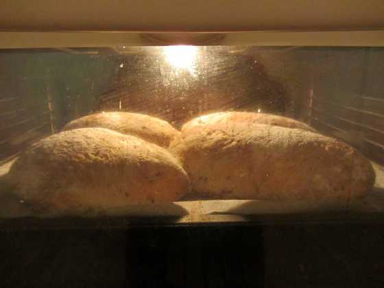

パン屋 / 茨城県那珂郡東海村
焼きあがったら、
売り切れまで。
東海村のパン屋「Pain des NOI」。その日に焼いたパンを、売り切れ次第で終える小さなお店です。
Instagramを見る場所を見るお店のこと
「パン屋です。」のひとこと
Pain des NOI(パン デ ノイ)は、茨城県那珂郡東海村船場にあるパン屋です。Instagramのプロフィールには「パン屋です。」とだけ書かれ、営業は10時から17時、売り切れ次第終了とあります。飾らないひとことと、売り切れまでというやり方から、このページは「焼きあがったら、売り切れまで」をコンセプトにしました。
店名の「NOI」の意味や、お店の由来・理念は確認できていません。断定せず、分かり次第お店の言葉でご紹介します。

パン
並ぶパンのイメージ
実際の商品ラインナップ・価格は準備中です。以下の写真は、パン屋の雰囲気を伝えるためのフリー素材のイメージです。



口コミ
お客様の声(イメージ例)
以下は制作側が作成した創作のイメージ例で、実在のお客様の声ではありません。
イメージ例
午前のうちに行ったら、棚がまだにぎやかでした。売り切れ次第と聞いていたので、早めに行って正解でした。
イメージ例
こぢんまりしていて、気負わず入れる雰囲気です。焼きたての香りに、つい予定より多く買ってしまいました。
イメージ例
朝ごはん用と、おやつ用のパンを選ぶのが楽しい時間でした。また近くに寄ったら立ち寄りたいです。
アクセス
お店の場所と情報
| 所在地 | 〒319-1115 茨城県那珂郡東海村船場661-1 |
|---|---|
| 電話 | 準備中 |
| 営業時間 | 10時〜17時(売り切れ次第終了)※Instagramプロフィール記載。変更の可能性あり |
| 定休日 | 準備中 |
| 駐車場 | 準備中 |
| @pain_des_noi |